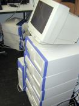

| FlatFileAdaptor |
This project modifies the FlatFileAdaptor as shipped with EOF2. It adds automatic key generation and fixes a couple of bugs. |
| |
| GNUstep startup |
These are Sys V startup scripts for GNUstep that work on Redhat and Suse (tested up to 7.3, 9.1, respectively). Copy these to /etc/init.d. |
| |
| Zillion |
The Zillion distributed computing project is a load balancing software package based on GNUstep |
| |
| Genecruncher |
The Genecruncher project is a hardware/software project to estalish a computer cluster. It is mainly used for simulations in statistical genetics. |
 |